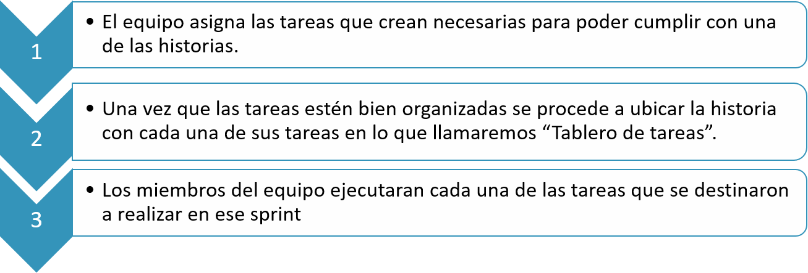
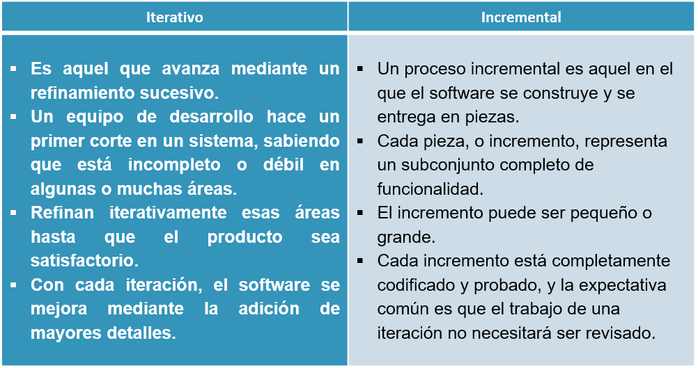

Título: Metodología SCRUM
Introducción
Entre las diferentes metodologías de un proyecto, SCRUM es el marco ágil más extensamente utilizado para desarrollar y gestionar productos (software) complejos y desarrollo de nuevos productos y servicios.Se caracteriza por sus valores centrales: planificar, inspeccionar y adaptar. Por lo tanto, Scrum gestiona exitosamente proyectos en los cuales existe incertidumbre del mercado y ambigüedad en las etapas tempranas del proyecto.
¿Qué es Scrum?
La metodología SCRUM es un marco de trabajo o framework que se utiliza dentro de equipos que manejan proyectos complejos, es decir trata de una metodología de trabajo ágil en equipo, a partir de iteraciones o Sprints, que tiene como finalidad la entrega de valor en períodos cortos de tiempo y para ello se basa en tres pilares:
- • Transparencia
- • Inspección
- • Adaptación
Transparencia
Con el método Scrum todos los implicados tienen conocimiento de qué ocurre en el proyecto y cómo ocurre. Esto hace que haya un entendimiento “común” del proyecto, una visión global.
Inspección
Los miembros del equipo Scrum frecuentemente inspeccionan el progreso para detectar posibles problemas. La inspección no es un examen diario, sino una forma de saber que el trabajo fluye y que el equipo funciona de manera auto-organizada.
Adaptación
El equipo se ajusta para conseguir el objetivo del sprint. Esta es la clave para conseguir el éxito en proyectos complejos, donde los requisitos son cambiantes o poco definidos y en donde la adaptación, la innovación, la complejidad y flexibilidad son fundamentales.

Roles en el equipo Scrum
Con la metodología Scrum, el equipo tiene como foco entregar valor y ofrecer resultados de calidad que permitan cumplir los objetivos de negocio del cliente. Para ello, los equipos de Scrum son auto-organizados y multifuncionales. Es decir, cada uno es responsable de unas tareas determinadas y de terminarlas en los tiempos acordados. Esto garantiza la entrega de valor del equipo completo, sin necesidad de ayuda o la supervisión minuciosa de otros miembros de la organización.
Herramientas de la Metodología Scrum
Las herramientas que se utilizan en Scrum están definidas para maximizar la transparencia dentro del equipo; es decir, que todos tengan una misma visión de lo que está ocurriendo en el proyecto. Las herramientas principales de Scrum son: Product Backlog y Sprint Backlog
Product Backlog
El product backlog es el listado de tareas que engloba todo un proyecto. Cualquier cosa que debamos hacer debe estar en el product backlog y con un tiempo estimado por el equipo de desarrollo. La responsabilidad exclusiva de ordenar el product backlog es del Product Owner, que se encuentra en constante comunicación con el cliente para asegurarse de que las prioridades están bien establecidas.-Es un listado de tareas que engloba todo un proyecto. -El equipo de desarrollo elige tareas del product backlog en el sprint planning para generar el sprint backlog.
Sprint Backlog
Es el grupo de tareas del product backlog que el equipo de desarrollo elige en el sprint planning junto con el plan para poder desarrollarlas. Debe ser conocido por todo el equipo, para asegurarse de que el foco debe estar en este grupo de tareas. El sprint planning no cambia durante el sprint, solo se permite cambiar el plan para poder desarrollarlas.-Es el grupo de tareas del product backlog que el equipo de desarrollo elige en el sprint planning junto con el plan para poder desarrollarlas. -Debe ser conocido por todo el equipo, para hacer énfasis en este grupo de tareas.
Hitos de la Metodología Scrum
El desarrollo iterativo se realiza en un sprint, que contiene los siguientes eventos: Scrum Planning, Daily Scrum, Sprint Retrospective.
DAILY SCRUM
Es una reunión diaria dentro del sprint que tiene como máximo 15 minutos de duración. En ella debe participar el equipo de desarrollo y el Scrum Master.Esta reunión es la más oportuna para poder inspeccionar el trabajo y poder adaptarse en caso de que haya cambio de tareas dentro de un sprint. Para que el equipo tenga un eficaz Scrum diario se debe tomar en cuenta los siguientes pasos
- 1. Compromiso
- 2. Identificación
- 3. Participación
- 4. Importancia
- 5. Inspeccionar cada tarea

SPRINT RETROSPECTIVE
-Es la reunión del equipo en la que se hace una evaluación de cómo se ha implementado la metodología Scrum en el último sprint. -El equipo Scrum se inspecciona a sí mismo, proponiendo mejoras para el siguiente sprint
SCRUM PLANNING
Una sesión de planificación de sprint usando puntos de historia podría ser así:

Planificación y ejecución de un Sprint usando historias, puntos, tareas y un tablero de tareas
La forma en que los puntos anteriores se agrupan para crear una organizada planificación seria de la siguiente manera:
Planificación y ejecución de un Sprint usando historias, puntos, tareas y un tablero de tareas

¿Iterativo o incremental?
Scrum también se trata de comprender el valor que ofrece el software, observar exactamente cómo se entregará ese valor y cambiar el rumbo si hay una manera de entregar más valor. Es por eso que Scrum es tanto incremental y metodología iterativa.
Ventajas & Desventajas
Ventajas
- -Scrum es muy fácil de aprender: los roles, hitos y herramientas son claros y tienen un objetivo por lo que es un método muy relacionado con nuestra manera diaria de trabajar.
- -Se agiliza el proceso, ya que la entrega de valor es muy frecuente.
- -Menor probabilidad de sorpresas o imprevistos, porque el cliente está viendo frecuentemente el proyecto.
Desventajas
- -Funciona más que nada con equipos reducidos. Las empresas grandes, por ejemplo, deben estar sectorizadas o divididas en grupos que tengan objetivos concretos. De lo contrario, en la práctica, el efecto de la técnica se perderá.
- -Requiere una exhaustiva definición de las tareas y sus plazos. Cuando estos dos aspectos no se definen adecuadamente, Scrum se desvanece. Recuerda que la división del trabajo en cada etapa (y de éstas en tareas específicas) son la esencia de esta metodología.